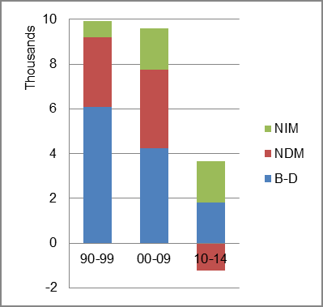

The foreign-born (FB) population increased from 44,772 in 1960 to 69,742 in 2010. That was an increase of 55.8 percent. The foreign-born share changed from 7.4 percent to 5.3 percent.
The share of the overall population that was native-born (NB) increased by 121.0 percent.
New Hampshire: Population 1960-2010
The first chart below shows the three population change factors for three periods adjusted for annual average amounts. Natural change (B-D) was the primary factor in population increase in the first two periods, edged out by NIM in the most recent period.
The second chart shows the same data but with an adjustment to reflect births to immigrants shifted to NIM. In it, NDM replaced B-D as the primary factor adding population in the most second period and NIM became the dominant factor in adding population in the most recent period.
New Hampshire: Sources of Population Change 1990-2014 New Hampshire: Sources of Population Change (Adjusted) 1990-2014 
B-D NDM NIM B-D NDM NIM 90-'99 61.5% 31.2% 7.4% 90-'99 50.8% 31.2% 18.0% 00-'09 44.3% 36.5% 19.1% 00-'09 31.7% 36.5% 31.7% 10-'14 49.2% neg. 50.8% 10-'14 18.9% neg. 81.1%